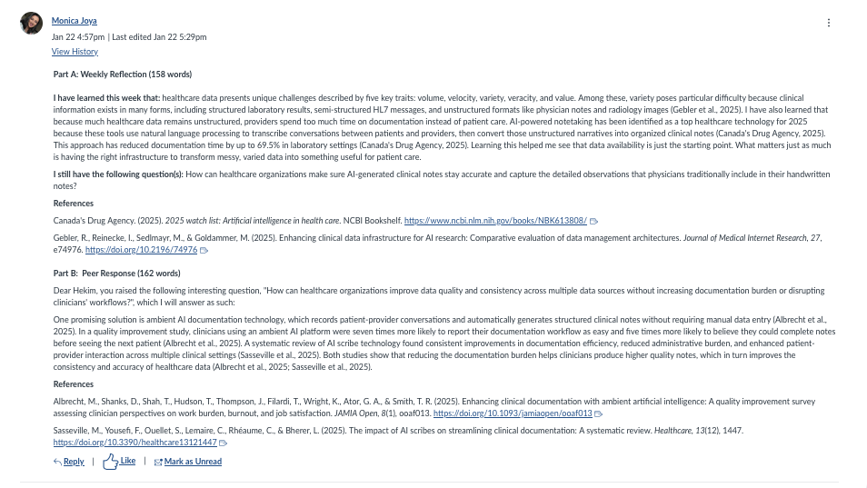

Written Assignment
Healthcare Datasets Exploration
A hands-on exploration of structured health data — examining MIMIC, FHIR, and real-world EHR formats. This assignment revealed how messy, incomplete, and biased clinical records challenge the performance of even the most carefully designed AI models.
View Assignment FilesDiscussion Post
Week 2 Discussion
Weekly discussion on the challenges of working with real-world healthcare datasets — missing values, inconsistent coding standards, and the ethical dimensions of patient data access.
